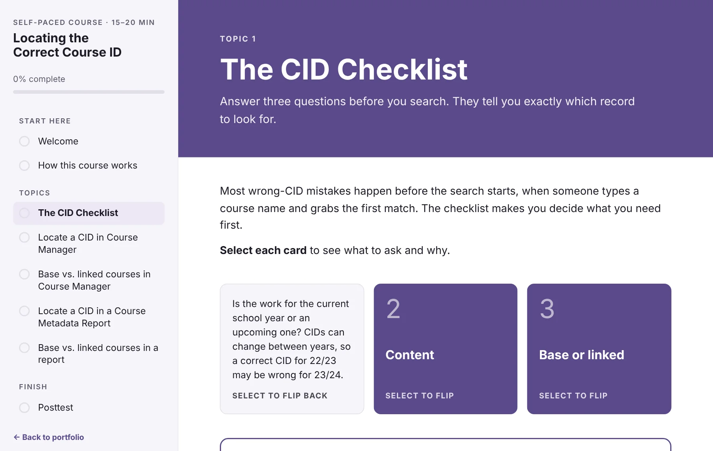

Training that starts with the problem.
I design learning for adult professionals, from the needs assessment through the finished course and the plan to prove it worked. This portfolio follows one project through every phase.
Locating the Correct Course ID
A team of curriculum specialists was starting work in the wrong course record nearly 30% of the time. This 15–20 minute self-paced course teaches a three-question checklist and two search methods, with practice and a scored posttest.
Take the course
Project materials
Instructional design document
Needs assessment with survey data, goal, learner and task analysis, objectives with aligned assessment items, instructional strategy, and a formative evaluation plan.
Write-upHow I designed it
The process phase by phase, and how adult learning theory shaped specific decisions in the course.
PowerPoint · original prototypeThe 2022 branching prototype
The first version of the course, built as a menu-driven, branching PowerPoint module.
The process, in five phases
- AnalyzeSurvey, interviews, and observation confirmed a skill gap that training could close.
- DesignFive measurable objectives, each with two aligned assessment items.
- DevelopA self-paced course with a job aid, demonstrations, and practice with feedback.
- ImplementTimed to release just before sprint planning, so learners use it right away.
- EvaluateSME review, one-to-one, small-group, and field trials before scaling.
My current professional work is proprietary, so these samples come from a graduate project at the University of South Carolina, anonymized with mock-up screens and fictional data. Read more about these samples.